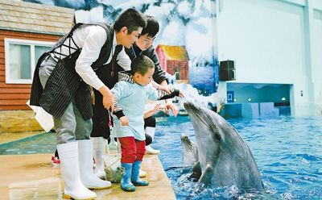

全国第二十五次助残日首次聚焦孤独症儿童
桂电志愿者网 日期：2015-05-25 来源：人民网

一名孤独症儿童在志愿者陪同下近距离观看海豚。新华社记者刘潇摄
“我们要活得比他们长久，这样才能一直照顾他们到老。”孤独症双胞胎兄弟宝宝贝贝的父亲无奈地说。
宝宝和贝贝出生在北京，活泼可爱。但是随着孩子逐渐长大，家人却发现他们迟迟不肯开口，特别喜欢攀高，喜欢旋转，丝毫不懂什么是危险。两兄弟之间没有交流，甚至从来没有拉过手。焦急的父母带着孩子去了医院，得到的诊断：都患有孤独症。
孤独症又称自闭症，是一种先天性神经发育障碍，主要表现为社会交往障碍以及刻板的行为、兴趣和活动。孤独症患者生活在自己的世界，像来自天上的星星一样，因此被称为“星星的孩子”。根据WHO公布的全球患病平均水平62/10000推算，我国约有学龄前孤独症儿童60万。
5月17日是全国第二十五次助残日，首次聚焦孤独症儿童，主题为“关注孤独症儿童，走向美好未来”。
手挽手情系孤独症群体
助残日期间，全国各地深入了解残疾人的基本状况及所面临的主要困难和问题，为孤独症群体办实事、解难题、出实效。
5月17日，由中国残疾人福利基金会、北京市残疾人福利基金会和北京市西城区人民政府共同主办的“集善工程·第二十五次全国助残日主题活动”在北京西单文化广场举行。
山东青岛市组织“关怀孤独症儿童，共创美好未来”志愿服务，募集资金帮助1000余名孤独症儿童；启动“点亮心灯，与孤独症儿童同行”红领巾助残活动。
上海、吉林组织举办孤独症儿童主题绘画活动。在展示孤独症孩子自身能力的同时，也为社会创造了走进残疾儿童内心世界的机会。福建省开展家庭运动会，邀请孤独症儿童在活动中打开心灵、提升社会交往能力……
项目引领“助梦飞翔”
项目引领，形成一套系统有效的干预诊断治疗机制，孤独症康复迎来春天。
近年来，中国残联逐步将孤独症儿童康复纳入重点业务工作来抓，着力开展了贫困孤独症儿童康复救助、孤独症儿童康复教育机构扶持、康复人员培训等工作。
在中央财政支持下，2009年至2015年，中国残联投入经费4.68亿元，组织实施“贫困孤独症儿童康复项目”，为近4万名3—6岁的贫困家庭中的孤独症儿童提供康复训练补助。
2010年出生的沐沐，三岁时被确诊为孤独症。沐沐的父母带着他到一家民营机构进行康复训练：“当时我们全家的收入，基本上都给他交了学费。”沐沐的母亲说：“后来了解到国家有贫困孤独症儿童康复项目，不仅可以到指定机构训练，还享受每年12000元的补助，这可给我们家庭解决了大问题。”
2013至2015年，中国残联实施孤独症儿童康复教育试点项目，连续三年扶持50个康复机构，带动全国孤独症儿童康复教育机构规范建设和发展。此外，定期举办孤独症儿童康复学科带头人培训班及孤独症儿童康复专业技术人员培训班，培训专业人员600多人次。
让自闭症孩子融入社会，教育是关键。目前，学龄孤独症儿童少年主要通过在普通学校随班就读或在培智学校就读接受义务教育。截至2014年底，国家共资助4.26万名家庭经济困难残疾儿童接受普惠性学前教育，其中孤独症儿童3600多人次。
为残疾人幸福搭建“无障碍通道”
为了解决成年之后孤独症患者的生活问题，各级康复机构在开展康复训练的同时，也逐步开展孤独症患者的生活、就业技能培训。武汉禧乐儿童康复中心在志愿者团队的帮助下，开设了园艺培训和西点烘焙课程。郑州康达能力训练中心开展了纸雕、陶艺、美工等适合大龄孤独症孩子的课程。这些有益的探索为解决大龄孤独症患者生存问题提供新的尝试。
保障残疾人权益的多项政策办法陆续出台，残疾人享有的社会公共服务更加完备。2015年3月1日，新修订的《残疾人航空运输管理办法》正式施行，进一步规范了残疾人航空运输的管理和服务。4月21日，印发的《残疾人参加普通高等教育招生全国统一考试管理规定（暂行）》中规定，盲、聋、肢残学生可以申请以合理便利的方式参加全国高考；5月1日，视障旅客可以携带导盲犬乘坐火车、地铁。银行电子服务、旅游和网络等行业无障碍服务规定予以制定和实施；全国残疾人服务热线和全国残疾人信访信息系统正式开通。
“要使贫困和重度残疾人的基本生活得到稳定的制度性保障，尽快帮助他们摆脱贫困，在制定各项福利保障政策时，要特别关心和兼顾残疾人的实际困难，把好政策、好福利真正落实到残疾人身上。让残疾人获得更多的发展机会，使他们的生活每年都有新改变。”中国残联主席张海迪如是说。
【责任编辑：李博晶】